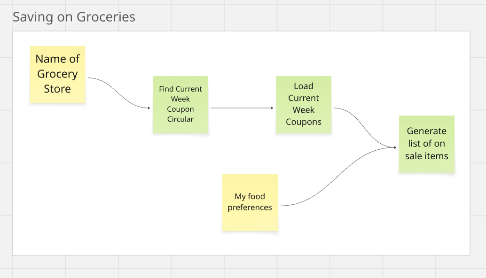

I've been thinking about simple agents that can help regular everyday people save money and thought about an agent that given the name of a grocery store and a person's food preferences, could find the weekly coupon circular published by the grocery store and then recommend a list of items I should purchase.
This is the core functionality of the agent. After this, there are lots of things we could do that are pretty easy to build into the agent - generate a list of meals one could cook with those items, generate a shopping list, generate the savings etc.
On paper, this is a simple agent and here is a visual -

If we dig into the steps -
So where is the catch - Steps 2 and 3.
So whenever I want to build an agent, especially one like this, where the public web is the data source, I start by asking Claude to execute each step. E.g.
The workaround I've come up with when web scrapers don't work is to use Puppeteer (which is a headless browser). Basically, it mimics someone visiting a website and entering a zip code and then takes screenshots of the webpage that is fed to an LLM to extract the list of items.
I have Puppeteer set up via MCP, so it is easy to continue testing this via Claude. I asked Claude to use Puppeteer to find the local Shoprite and it's weekly circular. After multiple attempts it too failed. Here is the message I got -
Unfortunately, while I was able to navigate to the ShopRite weekly circular page using Puppeteer, the content isn't displaying properly.
This is likely because:
So I hit another dead end. So then I decided to use some of the "Autonomous Agents" that are out there. My 2 favorite to test this kind of stuff are ChatGPT Agent Mode and Manus.
I like using Autonomous agents as I can see what they do when they run into issues. So ChatGPT agent mode and Manus ran into the same issue -
Cloudflare is blocking access to the weekly circular on the Shoprite site.
This is where it gets interesting. ChatGPT agent mode spent 17 minutes trying different things and finally came back with a creative solution. It found coupons on a different site that was more scraper friendly.
The store’s website is protected by Cloudflare, so the circular was obtained from a third‑party preview site (Lady Savings and HotCouponWorld).
It then returned a list of items on sale and I was quite impressed with how it got around the Cloudflare issue.
Manus came back with this message and I asked it to try a different approach as I was curious what it would do -
I am unable to access the ShopRite website due to a Cloudflare security check that requires manual interaction. Would you like to take over the browser to complete this security check, or would you prefer I try a different approach to find the weekly circular?
Manus's workaround was similar to ChatGPT Agent mode. It tried finding the circular on a different site. What they both did was find a circular on another site, turns out it was an image, so they used their multi-modal capabilities to extract the text from the ads.
As my intent was to learn how these agents work, I took all the execution steps and fed it into an LLM and asked it to explain the process to me -
The agent first tries the official route but hits anti-bot protection, forcing it to find workarounds.
The agent systematically tests multiple weekly ad aggregator sites:
Once it finds a working source (ladysavings.com), the agent:
For each successfully downloaded image:
So, now that I have reverse engineered the process, what can I learn from it?
1 and 3 are doable, but I haven't figured out how to do 2.
If the question is, why would I even build this agent? Why not just use ChatGPT agent mode or Manus. I still see value in using ChatGPT agent mode or Manus to epxeriment and find a way to solve a need. Then I want to find the most optimal way to execute this and capture it in an agent that I have defined, that I know will run in the same way every time.
Since there is no memory, if I asked ChatGPT Agent mode or Manus to run this again for a different store, they would probably go through this entire trial and error process and waste a lot of time / tokens / resources.
I am curious how others would build this agent? What tools and approach would you use?